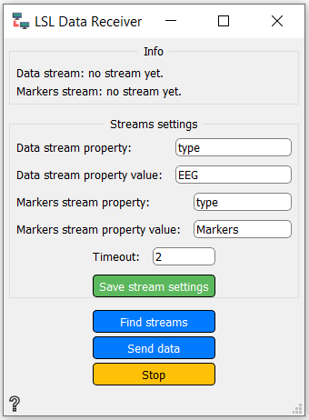
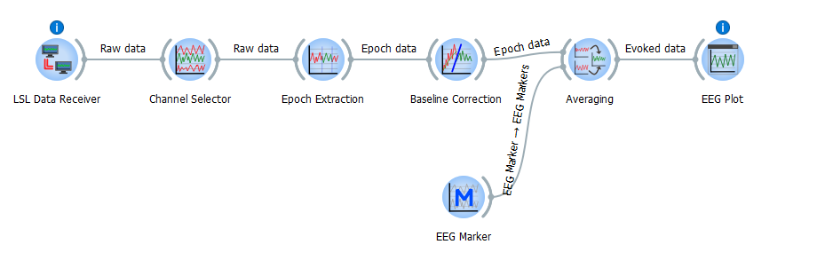

LSL Data Receiver¶
Receives EEG LSL data.
Inputs
Online data streams
Online markers stream
Outputs
Use

Streams settings - settings for data and markers
Timeout - Optionally a timeout of the operation, in seconds. If the timeout expires, less than the desired number of streams (possibly none) will be returned. (default FOREVER)
Save stream settings button - saves the Streams settings changes
Find streams button - Starts with findings streams with data and markers
Send data button - Sends found data to workflow (as output Raw)
Stop button - Stop data finding
Example¶
